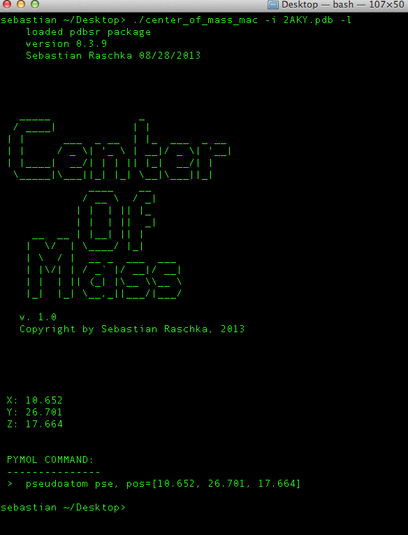

PDB Center of Mass Calculator let's you calculate the XYZ coordinates of the center of mass of any PDB file - for the whole structure, or the Protein and Ligand separately. This stand alone command-line tool for Mac OS, Linux, and Windows operating systems is really simple to use. All you need is to have a PDB file and you are good to go!
Open a new terminal window, and type
folder_that_where_you_saved_the_program/center_of_mass
-h to see what options are available:
From the available options you can see that you can choose
between calculating the center of mass of the ligand (-l) or the
protein (-p).Note that if you use neither of
the flags -l or -p, the center of
mass of all atoms in the input PDB file will be
calculated.
Let's have a look at the ligand's center of mass (don't forget to remove all water molecules from the input PDB file if you don't want to include them in the calculation).

As you can see in the figure above, the output consists of
the XYZ coordinates of the ligand's center of mass, and
additionally a handy command to visualize the center of mass
in pymol: pseudoatom pse, pos=[10.652, 26.701,
17.664]
Now, let's have a look where the center of mass of the protein is located:
| Mac OS X | v 1.0 |
| Linux | v 1.0 |
| Windows | v 1.0 |
Note:
If you have a particular LinuxDistro that does not support the current Linux version of PDB to FASTAconverter, please let me know, and I will try to compile the appropriate version for you.